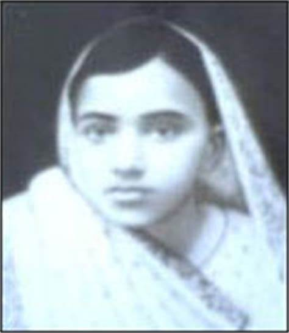
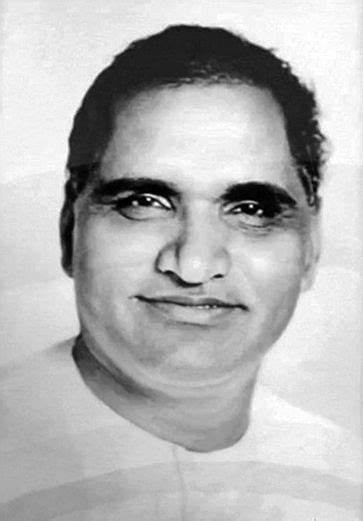

History
To realize a dream which he had cherished since his boyhood, Pandit Hiralal Shastri, the founding father of Banasthali Vidyapith, resigned his prestigious post of Secretary in the Home and Foreign Department in the erstwhile Jaipur State in 1927 and selected the remote village of Banthali (as Banasthali was originally called) as the centre of his life’s work. His plan was to organize a programme of rural reconstruction on the lines laid down by Gandhiji and also to train public workers through constructive service of the people.
While so engaged in his work Shastriji also wanted to train his promising daughter Shantabai as a social worker dedicated to the cause of women’s upliftment. But destiny ordained otherwise. All of a sudden, after a brief illness of a day, Shantabai bade farewell to Banasthali on 25th April, 1935 at the tender age of only 12 years. The loss seemed irreparable at the moment, but soon the mood of despondency gave way to a new hope. If one Shantabai had departed there were others who could be trained likewise. This idea gave solace and opened the path of action.
To complete the unfinished task of his daughter, the Shri Shantabai Shiksha Kutir was started in October 1935 in the mud huts provided by the Jiwan Kutir, with about half-a-dozen girls.
The name ‘Banasthali Vidyapith’ was adopted only in 1943. This also happened to be the year when undergraduate courses were first introduced. The institution was granted the status of a deemed university in 1983 by the UGC. Prof. Sushila Vyas , the first student of Banasthali Vidyapith was appointed the first Director of Vidyapith. The UGC committee which recommended the conferment of University status on the institution kept the following points in mind: (i) Vidyapith’s definite and viable programme for restructuring courses at the undergraduate level and its eagerness to carry out various measures to make education more meaningful and practical, (ii) availability of opportunities to the students to develop their personalities, and (iii) Vidyapith’s initiative to inculcate spiritual and moral values in the students through various activities, emphasizing character-building and simplicity. With its autonomous status, the institute could now experiment, innovate and formulate its own curriculum and other activities.
Under the tutelage of the Shastri family, Banasthali Vidyapith has grown from a school catering to only 6 students to the only residential women institute in the country that provides education to girls from the pre-primary stage up to the Doctoral level ( Date-Line of growth of Banasthali Vidyapith ) Banasthali Vidyapith has been accredited by National Assessment and Accreditation Council (NAAC) with ‘A’ Grade (Five star Rating).
Our Source of Inspiration
Shanta Bai
Our Founders

Shri.Hiralal ShastriShri.Ratan Shastri